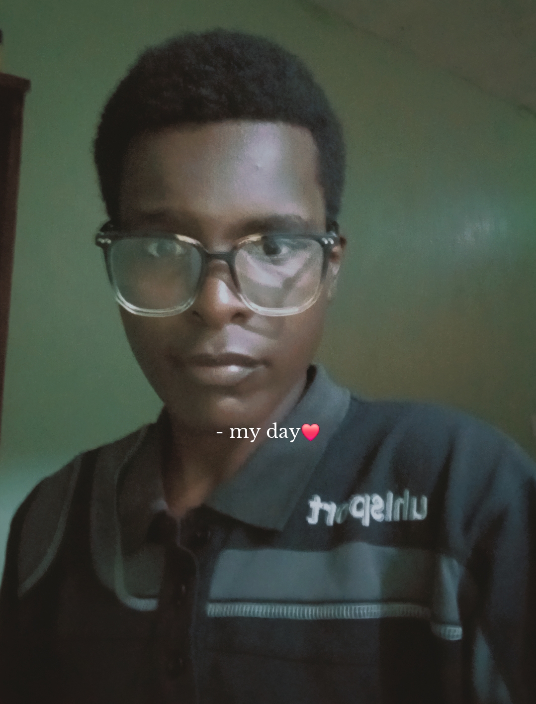

Get to know more about my journey and passion
I'm a passionate front-end developer with a strong foundation in web technologies. My journey in coding began after my high school years when I discovered the power of creating digital experiences through code. What started as a hobby quickly turned into a profession as I fell in love with the process of building beautiful, functional websites.
Currently, I'm focusing on mastering modern web development technologies and best practices. I believe in continuous learning and staying updated with the latest industry trends. When I'm not coding, you can find me exploring new design patterns, contributing to open-source projects, or mentoring junior developers in my community.

Diploma in Software Engineering
Zetech University, Kenya
Expected Graduation: 2027
Frontend Developer Intern
Tech Solutions Ltd
Summer 2026 - Present
Building accessible and user-friendly web applications that solve real-world problems and enhance people's digital experiences.
To become a full-stack developer and contribute to innovative projects that make a positive impact on society through technology.